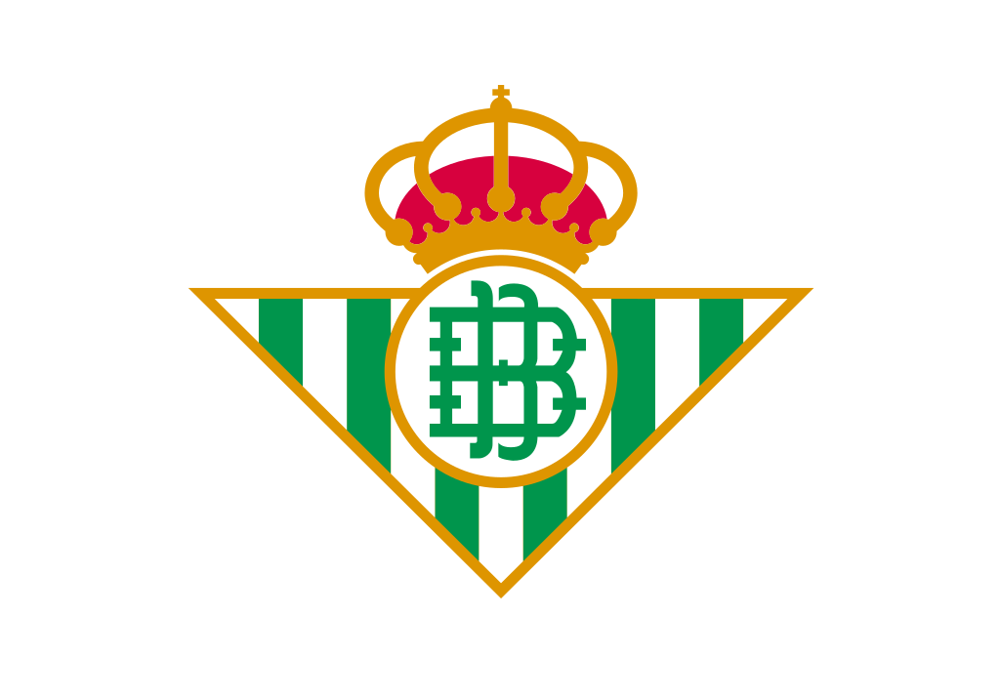
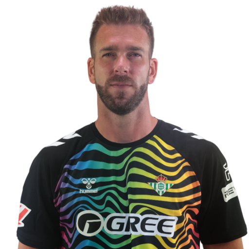
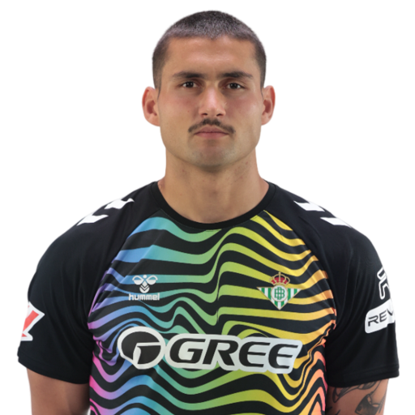
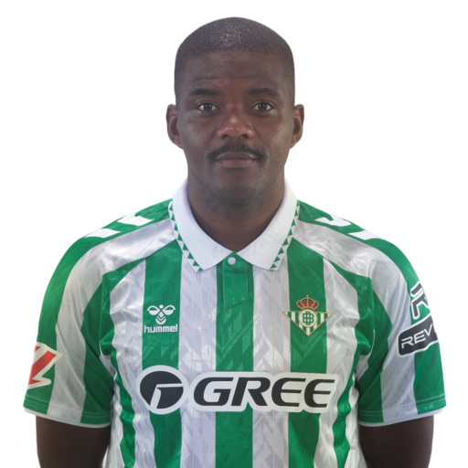

Dettagli Squadra
Manuel Pellegrini
Ángel Haro García
1907
Estadio Benito Villamarín
Portieri
1 Rui Silva
13 Adrián
25 Fran Vieites
Difensori
2 Héctor Bellerín (TD)
3 Diego Llorente (DC)
5 Marc Bartra (DC)
6 Natan (DC)
12 Ricardo Rodríguez (TS)
15 Romain Perraud (TS)
23 Youssouf Sabaly (TD)
Centrocampisti
4 Johnny Cardoso (CC)
14 William Carvalho (CC)
16 Sergi Altimira (CC)
18 Pablo Fornals (TQ)
20 Giovani Lo Celso (CC)
21 Marc Roca (CC)
22 Isco (TQ)
Attaccanti
7 Juanmi (AS)
8 Vitor Roque (AT)
9 Chimy Ávila (AT)
10 Abde Ezzalzouli (AS)
11 Cédric Bakambu (AT)
19 Iker Losada (AT)
24 Aitor Ruibal (AD)
38 Assane Diao (AD)